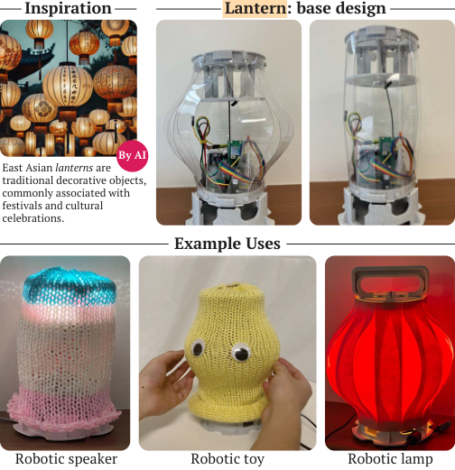
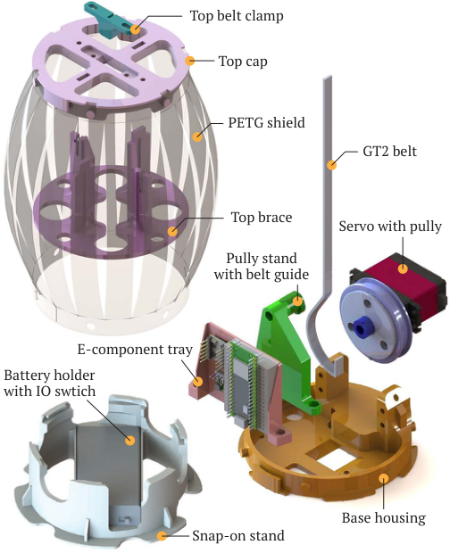
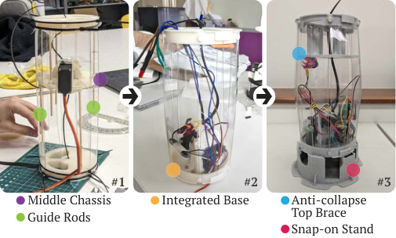
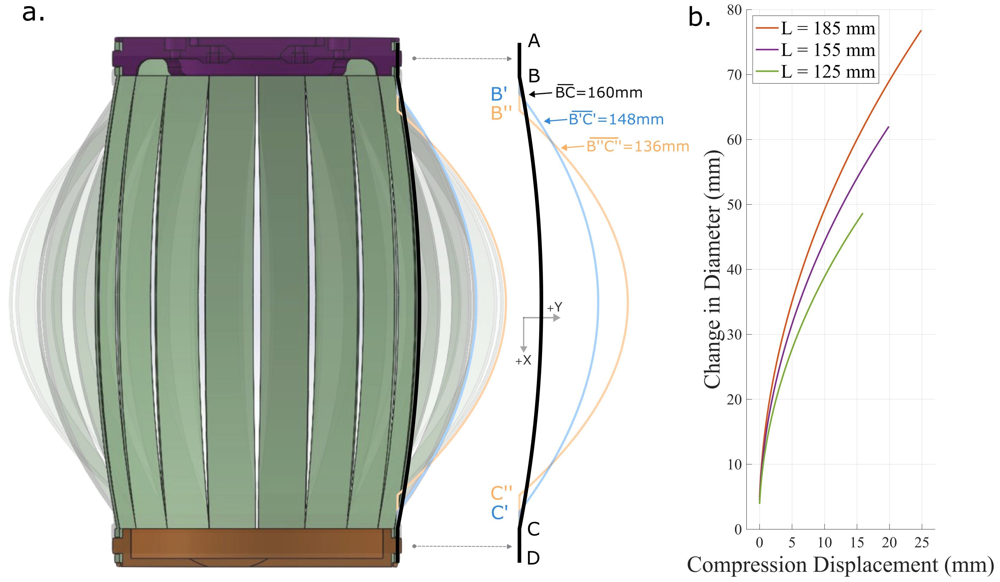
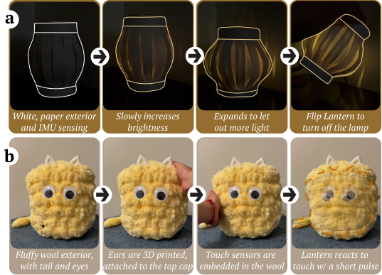
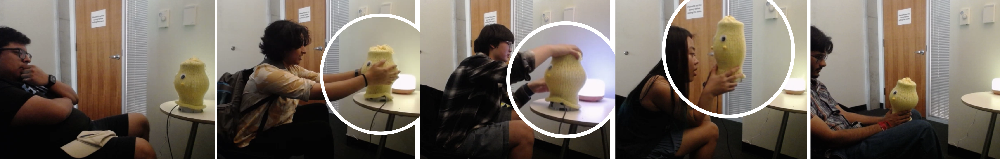
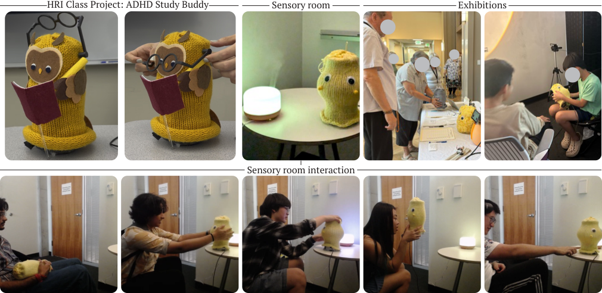

Studio / Lantern
Lantern
Lantern: A Minimalist Robotic Object Platform
ACM/IEEE HRI ’26 Sustainability Demonstration Recognition
Victor Nikhil Antony*, Zhili Gong*, Guanchen Li, Clara Jeon, and Chien-Ming Huang
*equal contribution

Robotic objects are simple actuated systems that subtly blend into human environments. Lantern is a minimalist robotic object platform to enable building simple robotic artifacts. We conducted in-depth design and engineering iterations of Lantern’s mechatronic architecture to meet specific design goals while maintaining a low build cost (~$40 USD).
As an extendable, open-source platform, Lantern aims to enable exploration of a range of HRI scenarios by leveraging human tendency to assign social meaning to simple forms. Our findings show that Lantern effectively evokes engagement, can support versatile applications ranging from emotion regulation to focused work, and serves as a viable platform for lowering barriers to HRI as a field.
Lantern as a mindfulness meditation guide for older adults.
Design goals
Lantern is engineered with an “easy assembly, warm interaction” mindset at its core, employing minimalist design principles. Prioritizing affordability, adaptability, and ease of assembly, Lantern is a step towards lowering barriers to HRI research with a low-cost, easy-to-build robotic object platform.
Haptic
Haptic interaction forms the basis of Lantern’s ability to create engaging interactions through low degree-of-freedom actuation. Vibrotactile and kinesthetic haptic feedback open up new possibilities for affect communication across interaction contexts.
Holdable
Beyond its compact and light form factor, Lantern’s soft exterior and deformable shell embolden its holdable profile. It can communicate via Wi-Fi and be powered with a battery, further enhancing its portability.
Low-cost
With a target per-unit build cost of around $40 USD, Lantern aims to lower the economic barriers to entry for interactive robotics research, particularly to enable in-the-wild, large-scale, long-term human-robot interaction studies.
Simple
A minimalist design streamlines Lantern’s mechanics and control requirements, making the robot more reliable and less intimidating to build and adapt. Simplified fabrication and assembly processes facilitate rapid replication.
The design of Lantern
The design of Lantern is inspired by traditional East Asian paper lanterns. Its core movement involves smooth, rhythmic expansion and contraction, evoking the calming motion of a floating lantern while providing haptic feedback.

Mechanical design
A servo motor with a pulley actuates Lantern by winding and releasing a belt that links the base housing and top plate. The belt converts the pulley’s torque into a linear force, deforming the shield and altering Lantern’s external dimensions.
Shell
Slicing the PET-G sheet in intervals allows radial expansion when the shell is axially compressed. A 1 mm sheet with 18 slices withstands inward compression during user interaction while remaining deformable with the torque of the servo motor.
Electronics
A Raspberry Pi Pico W controls Lantern’s behaviors. A 25 kg-cm hobby-grade servo produces the kinesthetic expansion effect, and a mini-vibration motor produces the vibro-tactile feedback.
Software
A microPython SDK for quick prototyping and stand-alone programs, and a microROS+ROS2-based system for ROS-based interaction programming.

Fabrication
The entire skeletal structure of Lantern, except for the shield, can be 3D printed with PLA filament and assembled using M3 fasteners. Each build requires around 150 g of filament, and the 1 mm PET-G sheet can be laser-cut.
Form factor and embodiment
An exterior covering envelops Lantern’s internal skeleton. It can be crafted from various materials (e.g., paper, yarn, cotton) with different textures and colors, allowing Lantern to be customized to specific applications or personalized to individual users.

Imagining use cases
To demonstrate Lantern’s adaptability and its viability across contexts, we integrated sound, light outputs, IMU, and touch sensing to enable the following use cases.

Robotic lamp for circadian well-being
A 60-pixel RGB LED strip and a 6-DoF IMU turn Lantern into a bedside wake-up light. The alarm is dismissed only after the user picks up Lantern and performs two gentle tilts or a single 180° flip.
Embodied speaker
With a mini speaker and microSD storage, Lantern synchronizes its expansion-contraction cycles to the beat of the music, while the vibration motor pulses in time with bass-heavy beats.
Soft toy
A fluffy wool exterior and two 3D-printed TPU “ears” make Lantern a cuddly comfort object. The vibration motor delivers low-amplitude, 20 Hz “purr” bursts that fade in and out every 10 s.
Hacking Lantern
We hosted a two-hour, hackathon-style design workshop with five participants from different academic fields (e.g., Mechanical Engineering, Mental Health Counseling, Human-Robot Interaction). Participants identified applications including breathing exercises for training or recovery, emotion regulation, yoga or Pilates routines, encouragement during spirometry tests, and maternity delivery training.
Two teams designed interactions for distinct use cases. Both teams implemented key behaviors of their envisioned interactions on Lantern in less than 20 minutes.
Emotion regulation for children in schools
Lantern was envisioned for elementary school sensory rooms, particularly after conflicts, to help children self-regulate their emotions through guided breathing. The team implemented “Bunny breathing” (short, quick breaths) and “Dragon breathing” (slow, deep inhales and exhales), and proposed a steady, slow-paced heartbeat to further calm children afterwards.
Post-operative exercises in hospitals
Lantern was envisioned for hospital rooms post-surgery to assist patients with guided breathing exercises. The team implemented a standard post-operative exercise: three normal breaths followed by one slow, deep inhale (3–5 seconds) and a controlled exhale.
Lantern in a sensory room
Inspired by the emotion regulation concept from the workshop, we set up a sensory room in a campus building with soft lighting, slow lofi background music, and a humidifier dispersing lavender essential oils. Lantern was placed on a small table beside a soft saucer chair and programmed with a slow breathing behavior.
A total of 20 participants (13M/7F, aged 18–31) interacted with Lantern and then filled out a short survey. Interaction styles varied from soft touches and pokes to more forceful squeezes, and some participants even engaged verbally, occasionally talking to it.

“Interaction with the robot felt like interacting with a pet. It was really nice and helped me relax.”
P7, sensory room case study
“The [robot’s squeaking] with its appearance was kind of charming, and I spent a bit of time observing its movements, which helped me focus more on my thoughts.”
P16, sensory room case study
Lantern as a research tool and educational platform
We provided four external HRI labs with a build guide, an instructional video, and a kit containing the materials necessary to construct Lantern, then hosted online discussions with two of the groups. The two groups successfully replicated Lantern within 2–4 hours and suggested a variety of potential use cases for Lantern in HRI research.
“a pair of lungs on [the QT robot]... add a degree of freedom that’s salient, but not expensive or too difficult.”
R1, external HRI researcher
“[Lantern] is a different kind of robot than most of the ones I’ve seen because it changes shape, whereas most robots are pretty rigid.”
R2, external HRI researcher
Feedback from external researchers, combined with the lack of low-cost, adaptable platforms for HRI education, motivated us to integrate Lantern into a graduate-level Introduction to HRI course with 30 students organized into ten teams. Each team received a Lantern kit, assembled it, and demonstrated core functionality before advancing to project work.
Projects spanned participatory design sessions with peers, interaction studies probing trust and engagement, and prototypes tailored for specific contexts. One team developed a “study buddy” for students with ADHD, while others built therapeutic companions or examined interaction transparency.
Public exhibitions
To further probe what kind of interactions Lantern evokes with special populations (e.g., children, older adults), as discussed by external researchers, we conducted a series of public exhibitions to inform future applications and interaction design.

Older adults community center
During a one-hour outreach session in a senior living center, Lantern performed slow inflation-deflation cycles. Participants held, lifted, and even squeezed it, and many described it as “adorable,” “cute,” and “neat.” Despite not being explicitly designed for squeezing, Lantern consistently recovered from these interactions.
Children’s robotics open-house
Children aged 6–12 (n=8) interacted freely with Lantern running a slow-breathing behavior. Some handled it with noticeable care, while others poked it or held it upside down. Some remarked that they felt relaxed or even sleepy, and their curiosity prompted us to remove the outer cover and explain its components.
Design opportunities
Across contexts, interactions with Lantern surfaced unexpected design tensions and new design possibilities.
Sound design
Participants often described the operational sounds from Lantern (e.g., the hum of its motor) as soothing and charming. Rhythmic sounds, like a soft “lub-dub” heartbeat paired with tactile vibrations, can create a more immersive, multi-sensory experience.
Language capabilities
Lantern can invite verbal interactions, and tiny language models could provide simple verbal responses grounded in its role. However, complex verbal interactions could raise user expectations, potentially clashing with Lantern’s minimalist form.
Tactile engagements
Although Lantern was not initially designed for squeezing, many participants, particularly older adults, instinctively tried to engage with it in this way. Flexible, 3D-printed TPU shells would allow users to squeeze Lantern.
Dynamic interactions for long-term engagement
Participants noted that static, pre-programmed behaviors limited Lantern’s sense of liveliness. Future iterations should integrate real-time, adaptive behaviors driven by user inputs (e.g., gestures, touch) or environmental sensing.